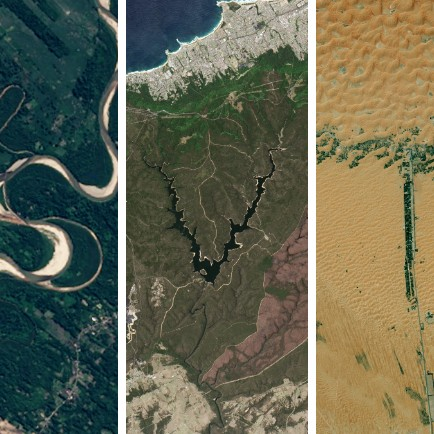

Les SVT de Madame B.
Des activités, des TP et des révisions de SVT pour la cinquième, la première et la terminale, de la cellule à la planète. Manipule, observe, enquête, puis entraîne-toi avec des fiches et des QCM.

Dernier ajout Terminale, corps humain et santé: le cerveau, un organe à préserver
Manipuler
Des simulateurs et des schémas animés pour voir ce qui se passe, et pas seulement le lire.
S'entraîner
Des fiches de vocabulaire, des textes à trous et des QCM corrigés pour vérifier ce qui est acquis.
Rédiger
Des questions de synthèse avec les éléments attendus, pour comparer sa réponse à la correction.